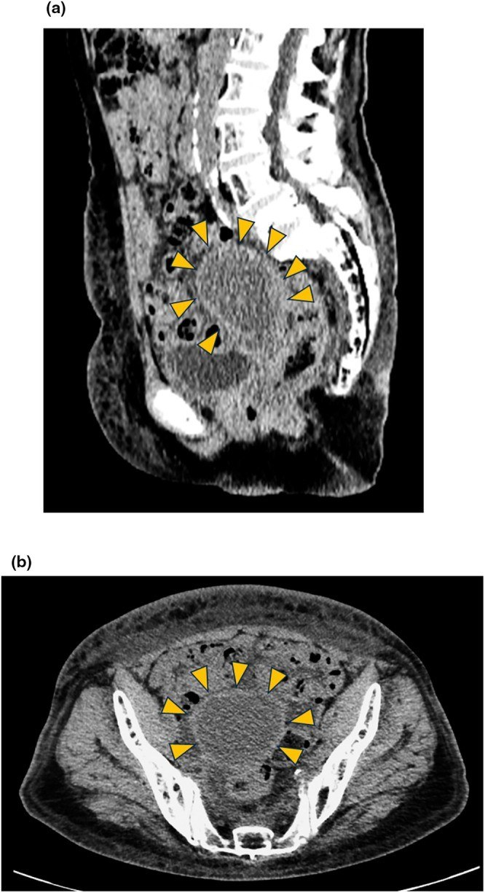
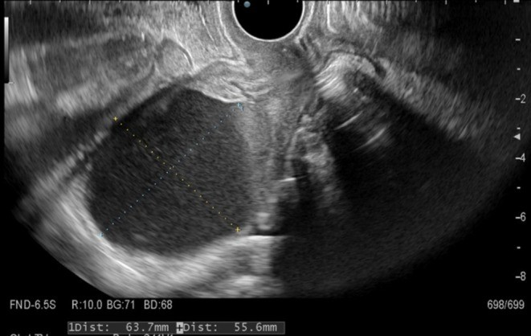
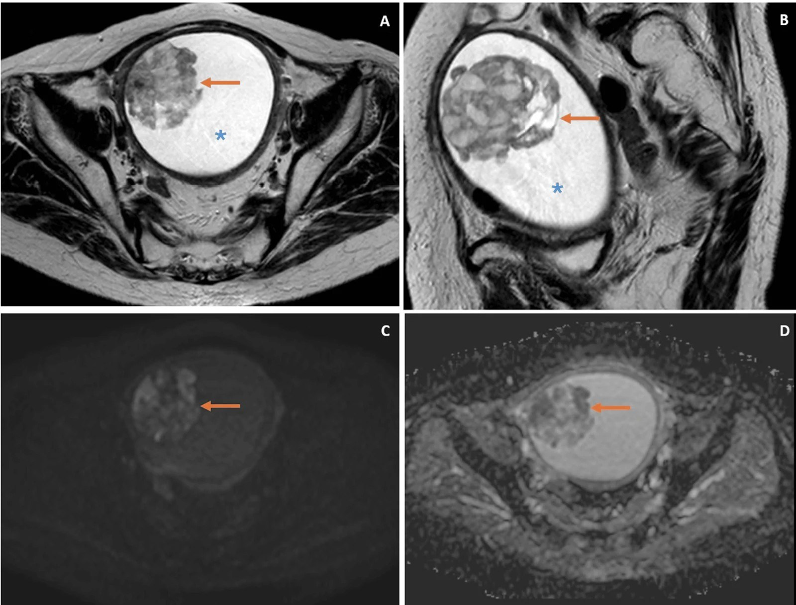

1634 — Hẹp cổ tử cung & ứ máu buồng tử cung sau xạ trị phụ khoa / Post-radiation cervical stenosis with hematometra
Tags: pattern:u-mau-buong-tu-cung pattern:hep-co-tu-cung pattern:xo-hoa-sau-xa vung:co-tu-cung vung:tu-cung vung:tieu-khung score:FIGO-2018 protocol:TVUS protocol:MRI-tieu-khung-DWI protocol:CT-chau
Mức chắc chắn (certainty): tổng hợp y văn (literature synthesis) — ca nguyên văn có đủ hình ảnh và số đo (PMC13240027), ca ứ máu 840 mL có u ác ẩn dưới (PMC13659860), tổng quan phân loại – xử trí hẹp cổ tử cung (PMC10866788), loạt 36 ca cắt tử cung vì hẹp cổ tử cung (PMC9302241), và tổng quan 66 ca vỡ ứ mủ tự phát (PMC13225007). Số liệu điều trị đều từ loạt ca, không có RCT.
1. Tổng quan bệnh học – cơ chế hình ảnh
- Vì sao cổ tử cung hẹp sau xạ: tia xạ gây viêm nội mạc mạch → thiếu máu → xơ hóa mô đệm cổ tử cung và dính ống cổ tử cung; kèm teo do thiếu estrogen ở người mãn kinh, ống cổ tử cung mất dần khẩu kính rồi bít hoàn toàn. Định nghĩa định lượng: ống cổ tử cung không cho đầu nong Hegar 2,5 mm đi qua; hẹp lỗ ngoài (external os) khi đường kính < 4,5 mm (PMC10866788).
- Phân loại Bettocchi (2016) — hẹp theo vị trí: I hẹp lỗ ngoài · II hẹp cả ống cổ tử cung + lỗ trong · III hẹp lỗ trong · IV hẹp cả lỗ ngoài + lỗ trong. Hệ quả thực hành: lỗ trong (ICO) hẹp gặp nhiều ở hậu mãn kinh, còn lỗ ngoài gặp nhiều ở tiền mãn kinh — đây là lý do không thể suy từ "lỗ ngoài trông mở" ra "buồng tử cung dẫn lưu được".
- Tần suất thực tế rất cao nhưng phần lớn im lặng: trong 31.052 ca soi buồng tử cung tại phòng khám, hẹp cổ tử cung gặp ở 32,7%, trong đó 70,1% là hậu mãn kinh (PMC10866788). Hẹp chỉ thành bệnh khi ứ máu (hematometra), ứ mủ (pyometra) hoặc ứ dịch (hydrometra) gây đau, hoặc khi cản trở tầm soát ung thư nội mạc.
- Vì sao ứ máu chứ không chỉ ứ dịch: buồng tử cung tiếp tục bong nội mạc và chảy máu (người còn buồng trứng/đang dùng hormone) nhưng không có đường ra → máu tích lại, tăng áp lực trong lòng tử cung → đau bụng dưới, căng tức, và nguy cơ vỡ tử cung (đã có ca vỡ tử cung do ứ máu tái diễn, có thể tử vong — PMC13240027).
- TẠI SAO hình ảnh chốt được dù không thấy cổ tử cung: (1) dịch trong buồng tử cung — siêu âm thấy hốc không hồi âm, vách mỏng; (2) cơ tử cung mỏng đi do căng — ca điển hình: buồng tử cung 63 × 56 mm, cơ tử cung mỏng lan tỏa, cổ tử cung 25 → 30 mm (dày lên do xơ), không thấy đường thông (PMC13240027); (3) tín hiệu của máu: methemoglobin → T1 sáng; T2 thay đổi theo giai đoạn (máu cấp trong hồng cầu còn nguyên → T2 tối; muộn → T2 sáng), mức dịch–dịch khi đang chảy máu thêm; (4) không ngấm thuốc ở phần dịch (khác u hoại tử) — nhưng phần đặc trong lòng mà ngấm thuốc + hạn chế khuếch tán thì là u, không phải máu.
- Con số phải nhớ:
- 840 mL ứ máu trong ca có u carcinosarcoma nội mạc ẩn dưới, 7 năm sau hóa–xạ trị ung thư cổ tử cung; khối u 3,1 × 2,7 × 3,0 cm, xâm lấn nửa ngoài cơ tử cung, CA-125 130 U/mL (PMC13659860).
- 47,2% (17/36) phụ nữ cắt tử cung vì hẹp cổ tử cung sau mổ có bệnh tiền ung thư hoặc ung thư ẩn (1 ung thư biểu mô tuyến cổ tử cung pT1a, 6 tăng sản nội mạc); hẹp xuất hiện 10,2 ± 5,6 năm sau mãn kinh (PMC9302241).
- Ngưỡng nội mạc ở hậu mãn kinh có dịch trong lòng: nội mạc > 3 mm → phải giải áp + soi buồng tử cung + sinh thiết, không được coi là "dịch sinh lý do hẹp" (PMC10866788).
- Vỡ ứ mủ tự phát: 66 ca, 84% bị chẩn đoán nhầm trước mổ (thường nhầm thủng tiêu hóa), tử vong 25,4%, sống 7/14/30/60 ngày 86,9/84,6/72,4/52,8% (PMC13225007).
2. Mẫu hình + chẩn đoán phân biệt theo vị trí (gamut)
- Theo tầng tắc nghẽn:
- Lỗ ngoài (hẹp độ I/IV): teo do mãn kinh, sẹo sau khoét chóp/LEEP, màng trinh kín (ứ máu âm đạo — hematocolpos, khác hoàn toàn), bất sản cổ tử cung.
- Ống cổ tử cung (độ II): xơ hóa sau xạ trị (bài này), sau đốt nội mạc tử cung không chừa đoạn eo, sau đặt vòng tránh thai lâu năm.
- Lỗ trong (độ III): hậu mãn kinh, sau xạ, u nội mạc/cổ tử cung bít lỗ trong.
- Theo bản chất dịch trong lòng tử cung: ứ máu (hematometra) — T1 sáng, đau chu kỳ/đau âm ỉ; ứ mủ (pyometra) — sốt, dịch có cặn, nguy cơ vỡ ổ mủ; ứ dịch (hydrometra) — dịch trong, thường im lặng, gặp ở hậu mãn kinh hoặc sau xạ; ứ nhầy (mucometra) — ít gặp.
- Gamut "khối trung tâm tiểu khung + dịch trong lòng tử cung" ở người đã xạ trị: hẹp cổ tử cung sau xạ · tái phát ung thư cổ tử cung · ung thư nội mạc/carcinosarcoma thứ phát · u cơ trơn thoái hóa · nang Naboth · ứ máu trong khuyết sẹo mổ lấy thai.
- Gamut "đau bụng cấp + dịch–khí trong ổ bụng" ở người có ứ mủ: vỡ ứ mủ tự phát (bắt buộc nghĩ tới, tỉ lệ chẩn nhầm 84%), thủng dạ dày–ruột, viêm phúc mạc, vỡ nang buồng trứng.
3. Bảng so sánh phân biệt (ma trận đối chiếu)
| Thực thể (entity) | Hình ảnh điển hình (TVUS/CT/MRI) | Chốt vào (rule-in) | Chốt loại (rule-out) | Gợi ý xác nhận |
|---|---|---|---|---|
| Hẹp cổ tử cung sau xạ + ứ máu | Buồng tử cung căng dịch, cơ tử cung mỏng lan tỏa; cổ tử cung dày, không thấy ống; dịch T1 sáng, không ngấm thuốc | Tiền sử xạ khung chậu + buồng tử cung căng dịch + cổ tử cung xơ + không có phần đặc ngấm thuốc | Có khối đặc ngấm thuốc/hạn chế khuếch tán trong lòng → là u | MRI tiểu khung (T1/T2/DWI/DCE) + soi buồng tử cung/CT-guided biopsy |
| Tái phát ung thư cổ tử cung (bài 1626) | Cổ tử cung to, không đều, ngấm thuốc, DWI hạn chế khuếch tán; có thể bít ống cổ tử cung gây ứ dịch phía trên | Khối cổ tử cung ngấm thuốc + hạn chế khuếch tán; SCC-Ag tăng | Cổ tử cung nhỏ, xơ đều, không ngấm bất thường → nghiêng di chứng xạ | MRI + sinh thiết cổ tử cung; PET/CT nếu nghi |
| Ung thư nội mạc / carcinosarcoma thứ phát sau xạ | Khối nhú đặc trong lòng (ca: 3,1 × 2,7 × 3,0 cm), T2 cao hơn cơ tử cung không đều, hạn chế khuếch tán, ngấm không đều, xâm lấn cơ | Khối đặc trong lòng + DWI hạn chế + xâm lấn cơ — chốt hơn khối lượng dịch | Lòng tử cung chỉ có dịch, thành trơn, không phần đặc | MRI DWI/DCE + sinh thiết nội mạc |
| Ứ mủ (pyometra) | Dịch có cặn/tăng tỷ trọng nhẹ, thành dày; khí trong lòng (hiếm) | Sốt + đau + dịch có cặn + cổ tử cung bít | Dịch thuần máu, không sốt → ứ máu | Cấy dịch + dẫn lưu |
| Ứ máu âm đạo (hematocolpos) | Khối dịch từ màng trinh trở lên, không có cổ tử cung bình thường, tử cung nhỏ đẩy lên cao | Bệnh nhân trẻ, vô kinh nguyên phát, đau chu kỳ, màng trinh phồng | Có ống cổ tử cung dẫn lưu → không phải hematocolpos | Khám + MRI; rạch màng trinh |
| Khuyết sẹo mổ lấy thai chứa máu | Hốc dịch trong khuyết cơ tử cung ở eo trước, không phải toàn buồng tử cung | Ổ dịch khu trú tại khuyết sẹo, nội mạc trên còn bình thường | Cả buồng tử cung căng dịch → hẹp cổ tử cung | TVUS + MRI; soi buồng tử cung |
| Nang Naboth / u cơ thoái hóa | Nang ở cổ tử cung, tín hiệu dịch đơn thuần; u cơ giảm tín hiệu T2 | Tổn thương khu trú trong cổ tử cung/cơ tử cung, không phải dịch tự do trong lòng | Dịch lan tỏa trong buồng tử cung → ứ máu/hẹp | MRI |
- Ảnh 1 — CT tiểu khung: ứ máu buồng tử cung (CC BY 4.0):

(a) lát Sagittal và (b) lát Axial: khối dịch lớn chiếm toàn buồng tử cung, cơ tử cung mỏng lan tỏa (đầu mũi tên vàng = đường viền thân tử cung). Cổ tử cung cứng, bít hoàn toàn sau xạ trị. Nguồn: Clinical Case Reports 2026 (PMC13240027), Fig. 1 — CC BY 4.0.
- Ảnh 2 — siêu âm đầu dò âm đạo cùng ca (CC BY 4.0):

Đo trên màn hình: 63,7 × 55,6 mm, dịch không hồi âm, cơ tử cung mỏng. Nguồn: Clinical Case Reports 2026 (PMC13240027), Fig. 2 — CC BY 4.0.
- Ảnh 3 — MRI: ứ máu 840 mL + u nội mạc ẩn dưới (CC BY 4.0):

*(A, B) T2W axial/sagittal: khối nhú tăng tín hiệu không đều so với cơ tử cung, nằm trong khối dịch ứ (xanh *); (C) DWI b1000: hạn chế khuếch tán; (D) ADC: tín hiệu thấp tương ứng. Đây là carcinosarcoma nội mạc phát hiện 7 năm sau hóa–xạ trị ung thư cổ tử cung. Nguồn: Cureus 2026 (PMC13659860), Fig. 2 — CC BY 4.0.*
4. Protocol chụp + hệ phân độ/điểm chuẩn hóa
- Bước 1 — Siêu âm đầu dò âm đạo (TVUS) là đầu tay: đo 3 chiều hốc dịch, đo độ dày cơ tử cung, tìm phần đặc trong lòng, mô tả cổ tử cung (chiều dài, chiều dày, có/không thấy ống), đánh giá buồng trứng và giãn đài–niệu quản (ứ máu lớn chèn niệu quản). Ở người đã cắt tử cung hoặc không đánh giá được, dùng siêu âm qua ngã âm đạo còn lại/qua thành bụng hoặc MRI.
- Bước 2 — MRI tiểu khung (chuỗi xung tối thiểu): T2 sagittal + axial (cấu trúc 3 lớp, ranh giới cơ), T1 (máu/mỡ: T1 sáng), T1 fat-sat (loại mỡ), DWI b800–1000 + ADC, T1 sau tiêm động học (DCE). Câu hỏi bắt buộc: (1) trong lòng có phần đặc không? (2) phần đặc có hạn chế khuếch tán/ngấm thuốc không? (3) u xâm lấn cơ tới đâu? (4) có hạch không?
- Bước 3 — CT chỉ khi cần: nghi vỡ ứ mủ (khí tự do, dịch ổ bụng), sỏi/canxi hóa, đánh giá lan rộng; không dùng CT để đánh giá ống cổ tử cung.
- Bước 4 — Chẩn đoán xác định hẹp cổ tử cung: không có kỹ thuật hình ảnh nào đo được độ thông ống cổ tử cung (PMC10866788) → soi buồng tử cung/đầu nong Hegar 2,5 mm là chuẩn; hình ảnh chỉ cho biết hệ quả (ứ máu/mủ/dịch) và loại trừ u.
- Bước 5 — Phân tầng xử trí (số liệu đi kèm):
| Tình huống | Ưu tiên | Số liệu / lưu ý |
|---|---|---|
| Ứ máu có triệu chứng, ống cổ tử cung còn nong được | Nong + dẫn lưu qua đường âm đạo, soi buồng tử cung ± sinh thiết | Giải áp tức thì; đau giảm ngay sau khi lấy 60 mL (PMC13240027) |
| Hẹp bít hoàn toàn do xạ, nong/thì soi không vào được | Chọc hút dưới hướng siêu âm (đường âm đạo/qua thành bụng) | Ca: 60 mL lần đầu, sau đó tái phát ~mỗi 2 tháng, 5 lần chọc trong vài tháng |
| Ứ máu tái phát, bệnh nhân không mổ được | Xơ hóa bằng ethanol (sclerotherapy) dưới siêu âm thời gian thực | 12 mL ethanol 100% = 10% thể tích hút ra (120 mL), lưu 10 phút, hút lại ~10 mL; không tái phát 1 năm, xuất viện ngày hôm sau |
| Hậu mãn kinh, dịch trong lòng + nội mạc > 3 mm | Giải áp + soi + sinh thiết nội mạc | Ngưỡng > 3 mm (PMC10866788); hẹp có thể che ung thư (47,2% ca cắt tử cung có bệnh ẩn) |
| Ứ mủ (sốt, dịch cặn) | Dẫn lưu + kháng sinh, cắt tử cung nếu vỡ/không đáp ứng | Vỡ ứ mủ: chẩn nhầm 84%, tử vong 25,4% (PMC13225007) |
| Hẹp tái phát nhiều lần, đã mãn kinh, không còn nhu cầu sinh sản | Cắt tử cung (đường âm đạo/qua nội soi ổ bụng) | Cân nhắc khi nong thất bại ≥ 2 lần hoặc không theo dõi được nội mạc |
flowchart TD
A[Dau bung duoi / ra mau bat thuong o nguoi da xa tri khung chau] --> B[TVUS: hoc dich trong buong tu cung?]
B -->|Khong| C[Tim nguyen nhan khac: tai phat, di can, tieu hoa]
B -->|Co| D[Do 3 chieu + do day co tu cung + tim phan dac]
D --> E{Co phan dac trong long?}
E -->|Co| F[MRI T2 + T1 + DWI + DCE]
F --> G{Phan dac han che khuech tan va ngam thuoc?}
G -->|Co| H[Nghi u noi mac / tai phat: sinh thiet noi mac + staging]
G -->|Khong| I[Coi la mau cuc / to chuc hoai tu: giai ap + theo doi]
E -->|Khong| J{Co sot hoac dich co can?}
J -->|Co| K[U mu: dan luu + khang sinh]
J -->|Khong| L[U mau do hep co tu cung]
L --> M{Ong co tu cung con nong duoc?}
M -->|Co| N[Nong + soi buong tu cung + sinh thiet neu can]
M -->|Khong| O[Choc hut duoi huong sieu am]
O --> P{Tai phat?}
P -->|Co| Q[Xo hoa ethanol 10% the tich, luu 10 phut]
P -->|Khong| R[Theo doi TVUS 3-6 thang]
Q --> S{Tai phat nua?}
S -->|Co| T[Cat tu cung neu khong con nhu cau sinh san]
S -->|Khong| R
5. Biến thể bình thường và cạm bẫy
- Biến thể bình thường: một vệt dịch mỏng trong lòng tử cung ở hậu mãn kinh (đặc biệt người đang dùng thuốc/chờ chu kỳ) có thể là sinh lý — nhưng chỉ khi nội mạc ≤ 3 mm và không có triệu chứng; vượt ngưỡng đó phải giải áp + sinh thiết.
- Cạm bẫy 1 — "ứ máu là chẩn đoán": ứ máu chỉ là dấu hiệu, không phải bệnh. Ca 840 mL có u carcinosarcoma nằm trong; bỏ qua phần đặc ngấm thuốc/hạn chế khuếch tán là bỏ ung thư. Luôn trả lời 4 câu hỏi ở mục 4 bước 2.
- Cạm bẫy 2 — tưởng u là máu cục: máu cục không ngấm thuốc, không hạn chế khuếch tán (hoặc hạn chế rất ít), đổi hình khi bệnh nhân đổi tư thế/rửa; u ngấm thuốc không đều + ADC thấp. Trên T1, methemoglobin sáng dễ nhầm u ngấm thuốc → so trước/sau tiêm.
- Cạm bẫy 3 — đo nội mạc khi có dịch: khi buồng tử cung căng dịch, không đo được độ dày nội mạc chính xác; phải đo phần đặc và mô tả bề mặt nội mạc, rồi sinh thiết — đừng ghi "nội mạc mỏng, an toàn".
- Cạm bẫy 4 — tế bào học cổ tử cung âm tính không loại trừ: hẹp cổ tử cung cản trở lấy mẫu và teo niêm mạc làm âm tính giả; ca carcinosarcoma có cytology âm tính nhưng MRI dương (PMC13659860).
- Cạm bẫy 5 — ứ mủ vỡ bị chẩn nhầm thủng tiêu hóa: 84% ca vỡ ứ mủ được chẩn đoán nhầm trước mổ; trên CT thấy khí tự do + dịch ổ bụng nhưng nguồn là tử cung — phải nhìn tử cung căng, thành mỏng, mất liên tục, và hỏi tiền sử xạ/hẹp cổ tử cung.
- Cạm bẫy 6 — bỏ sót vỡ tử cung do ứ máu: cơ tử cung mỏng + tăng áp lực lâu ngày → vỡ tử cung đã được báo cáo, có ca tử vong; đau tăng đột ngột + dịch ổ bụng ở người có ứ máu là cấp cứu, không chờ MRI.
- Cạm bẫy 7 — nhầm ứ máu âm đạo với ứ máu tử cung: hematocolpos ở trẻ vị thành niên không có bệnh lý cổ tử cung mà do màng trinh kín; xử trí là rạch màng trinh, không nong cổ tử cung. Tuổi + vô kinh nguyên phát + màng trinh phồng là chốt.
- Cạm bẫy 8 — can thiệp ethanol không đúng kỹ thuật: ethanol vào ống dẫn trứng → phúc mạc gây viêm phúc mạc, hoặc vào tuần hoàn gây ngộ độc toàn thân; phải hướng dẫn siêu âm thời gian thực, thể tích thấp (≈10% dịch), lưu 10 phút, và theo dõi đau/sốt 24 giờ.
6. Tự lượng giá — Blind Quiz
Ca 1 — nữ 81 tuổi, đau bụng dưới âm ỉ, tiền sử xạ trị ung thư cổ tử cung giai đoạn IIB 3 năm trước
- Bối cảnh: cổ tử cung cứng, ống cổ tử cung bít hoàn toàn; siêu âm: hốc dịch 63,7 × 55,6 mm; CT: buồng tử cung căng, cơ tử cung mỏng.
- Câu hỏi: Chẩn đoán hình ảnh là gì? Vì sao phải soi/sinh thiết cổ tử cung? Bước tiếp theo nếu nong không vào được?
Bấm để hiện đáp án (findings + chẩn đoán)
- Chẩn đoán: ứ máu buồng tử cung do hẹp cổ tử cung sau xạ — dịch không hồi âm, cơ tử cung mỏng, cổ tử cung xơ không thấy ống; đau do tăng áp lực trong lòng tử cung.
- Vì sao sinh thiết: hẹp cổ tử cung che tái phát ung thư — trong ca gốc, sinh thiết cổ tử cung xác định tái phát carcinoma vảy + di căn phổi dù tế bào học dịch hút âm tính.
- Bước tiếp: chọc hút dưới hướng siêu âm (ca gốc lấy 60 mL, đau giảm ngay); nếu tái phát nhiều lần → xơ hóa ethanol 12 mL (10% thể tích), lưu 10 phút.
- Nguồn: Clinical Case Reports 2026 (PMC13240027) — CC BY 4.0.
Ca 2 — nữ 60 tuổi, 7 năm sau hóa–xạ trị ung thư cổ tử cung, đau tiểu khung 3 tháng + ra máu nhẹ
- Bối cảnh: cổ tử cung hẹp rõ, tế bào học âm tính, CA-125 130 U/mL; MRI: buồng tử cung căng ~840 mL dịch + khối nhú 3,1 × 2,7 × 3,0 cm.
- Câu hỏi: Ba dấu hiệu MRI nào nói khối là u chứ không phải máu cục? Chẩn đoán và mức xâm lấn?
Bấm để hiện đáp án (findings + chẩn đoán)
- Ba dấu hiệu: (1) hạn chế khuếch tán trên DWI/ADC thấp; (2) ngấm thuốc không đều sau gadolinium; (3) xâm lấn nửa ngoài cơ tử cung — khối T1 đồng tín hiệu cơ, T2 cao hơn cơ không đều.
- Chẩn đoán: carcinosarcoma nội mạc tử cung (FIGO 2023 IIC sau mổ), xuất hiện 7 năm sau xạ trị ung thư cổ tử cung; di căn màng phổi 6 tháng sau chẩn đoán.
- Bài học: ứ máu lượng lớn ở người đã xạ không được coi là "di chứng lành" — luôn tìm phần đặc.
- Nguồn: Cureus 2026 (PMC13659860) — CC BY 4.0.
Ca 3 — nữ 69 tuổi, 19 năm mãn kinh, sốt 39 °C, đau bụng cấp, CT có khí tự do
- Bối cảnh: bụng cứng, dịch ổ bụng; bác sĩ ngoại chẩn đoán thủng dạ dày–ruột; tiền sử xạ trị khung chậu 8 năm trước vì ung thư cổ tử cung.
- Câu hỏi: Chẩn đoán thay thế? Dấu hiệu CT nào đổi chẩn đoán? Tiên lượng?
Bấm để hiện đáp án (findings + chẩn đoán)
- Chẩn đoán: vỡ ứ mủ tự phát (spontaneous perforation of pyometra) do hẹp cổ tử cung sau xạ — khí tự do + dịch ổ bụng không đồng nghĩa nguồn tiêu hóa.
- Dấu hiệu đổi chẩn đoán: tử cung căng, thành mỏng, mất liên tục thành sau, cổ tử cung bít; đối chiếu tiền sử xạ/hẹp cổ tử cung.
- Tiên lượng: trong 66 ca đã báo cáo, 84% chẩn nhầm trước mổ và tử vong 25,4% — cần mổ nguồn + kháng sinh phủ Enterobacteriaceae/anaerobe sớm.
- Nguồn: Int J Womens Health 2026 (PMC13225007) — CC BY-NC 4.0; ảnh minh họa từ PMC13240027 (CC BY 4.0).
Bài liên quan chéo
- 1609 – Suy buồng trứng & thiếu hụt hormone sau xạ trị phụ khoa
- 562 – Hẹp âm đạo sau xạ trị
- 582 – Biến chứng tiêu hóa–niệu sau xạ trị phụ khoa
- 1626 – Tái phát tại vòm âm đạo sau xạ trị ung thư cổ tử cung
- 1633 – Viêm bàng quang xạ chảy máu nặng
- 1612 – Colpocleisis & biến chứng ứ mủ (pyocolpos/pyometra)
Ảnh
images/1634_u-mau-buong-tu-cung_CT-PMC13240027-F1.jpg— CC BY 4.0, Clinical Case Reports 2026 (PMC13240027), Fig. 1.images/1634_u-mau-buong-tu-cung_TVUS-PMC13240027-F2.jpg— CC BY 4.0, cùng bài, Fig. 2.images/1634_u-mau-buong-tu-cung_MRI-PMC13659860-F2.jpg— CC BY 4.0, Cureus 2026 (PMC13659860), Fig. 2.- Không tải ảnh Radiopaedia/AuntMinnie; dẫn link trong
sources.md.
Không dùng để chẩn đoán độc lập khi chưa có người hướng dẫn.